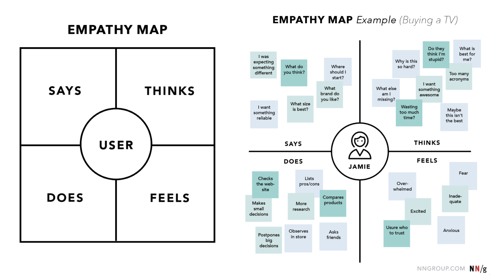

Learning Objectives
- Apply design thinking approaches and tools to dashboard development
- Evaluate whether to build a web application using
flexdashboardorshiny - Practice developing a web application using
flexdashboardorshiny - Demonstrate design knowledge including structure of layout, incorporation of data visualization, and choice of interactive elements
6.1 What is Design Thinking?
Design thinking in data science centers the user’s perspective throughout the entire development of a dashboard. It starts with the user by gaining an understanding on what the user needs and ends with the user by involving them in focus groups or other testing methods to get their feedback. Centering the user means we create better dashboards and improve data-informed decision making.
Design thinking is inherently an innovative and collaborative process because it involves exploring multiple options for the same problem.
The design thinking process can be encapsulated within these stages:
- Empathize and Define: In these stages, we use tools to understand the problem and our audiences.
- Ideate and Prototype: We use these stages to explore solutions.
- Test and Implement: In these final stages, we use tools to materialize the final product.
These stages are not meant to be in any particular order. While there is an inherent order to them, you should feel empowered to move between the stages as needed — depending on the development of your dashboard and the needs of your users.
6.2 Empathize and Define
Empathize Tool: Empathy Mapping
During the Empathize and Define stages, you can gather information through internal conversations with your team or conduct interviews with potential users.
The goal of an Empathy Map is to capture what a user says, thinks, does, and feels — additionally consider what their goals are (and do their goals align the goals you have in mind for the dashboard you’re developing?). Check out the empathy map the Nielsen Norman Group created for a customer, Jamie, who is buying a television.

Define Tool: Project Brief Wiki
The Empathize Stage helped us understand our audience. Now, we need to understand our problem. In the Define Stage, write down problem statements and document the specifications of the dashboard including the scope, timeline, and roles. It’s best to contain all this information within a Project Brief — a condensed version of a project plan.
You should feel comfortable sharing this document with not only your team, but your users as well. This ensures that everyone is on the same page. Keeping this in mind, consider having your Project Brief as a Wiki on GitHub in the Git repository for your dashboard.
When defining the dashboard you want to create, consider these types:
- Executive Dashboard: shows the big picture; used for high-level overview
- Operational Dashboard: shows what’s happening right now; used for monitoring
- Strategic Dashboard: shows progress toward a goal; used to inform decisions
- Analytical Dashboard: shows detailed analysis; used for identifying opportunities and deep analysis
6.3 Ideate and Protoype
Ideate Tool: Host a Brainstorm Session
Now that we’ve learned about our audiences and problems from the Empathize & Define stages, we can start to think about what ideas for dashboard solutions. The primary goal of this stage is to generate as many ideas as possible without judgement and evaluation — it’s all about quantity over quality. Once you’ve generated many ideas, then you can start to narrow it down to a single dashboard solution.
There are many ways to ideate individually or as a group, but here are some tips:
- Use mind mapping tools like Miro for virtual collaboration.
- If you’re working together in-person, use a white board, sticky notes, or a large piece of construction paper to capture as many ideas from as many team members as possible.
- Take a break!
- Group related ideas together.
- Set a time limit. This can vary from a few hours to multiple sessions throughout a week. Either way setting a time limit and making a plan to regroup and narrow down on ideas is helpful so that the ideation period doesn’t feel so nebulous.
Prototype Tool: Create a Minimal Viable Dashboard
At the Prototype Stage, we can experiment with a few of the ideas from the Ideate Stage to identify what is the best solution. Here we can create a quick, scaled down version of the dashboard. The primary goal is to create something more refined from the Ideate Stage, but not a final or completely usable dashboard. We want the prototype to be a minimal viable product where you can test out some functionality without committing to multiple iterations.
6.4 Test and Implement
Test Tool: Run Tests and Review Work from Previous Stages
You’ve completed your prototype — it’s time to test it out and receive feedback on it! Review your project brief and confirm your prototype reflects your users’ needs and the use cases you’re trying to achieve.
If you don’t have access to your users’, return to your Empathy Maps to make sure your prototype is aligned with the information you have gathered there.
Other tests to consider:
- Does your dashboard work across different devices?
- Does it meet accessibility requirements?
- Does the users’ dashboard experience align with how you think their experience should go?
If the test you run reveal that your dashboard is not meeting the goals of your team or your users, then it’s time to go back to the Prototype Stage (or even a different stage) and iterate before you complete the Implementation stage. You will also want to return to your Project Brief, Empathy Map, and additional successful metrics to ensure that your dashboard meets most of these goals and needs.
When implementing the dashboard:
- Add context and definitions to the dashboard.
- Test again!
- Internally: validate your data.
- Externally: users test and provide final feedback.
- How are you going to communicate your dashboard and make it accessible to your audience?